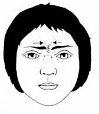
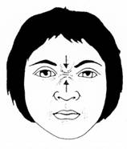
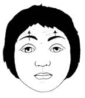
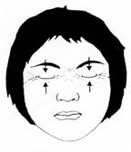
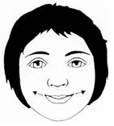
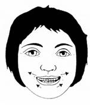
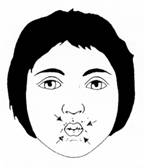
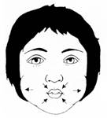
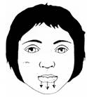

Paralisia total de todos, ou alguns, músculos da expressão facial.
O real valor da Fisioterapia pode não ter sido demonstrado em vários estudos, mas parece ter efeito benéfico no sentido de evitar deformidades e manter a flexibilidade e a elasticidade muscular durante o período de paralisia. Exercícios específicos podem ser indicados quando se observa esboço de movimento da musculatura envolvida. Estes não interferem na velocidade de recuperação, mas podem melhorar a função. As figuras que se seguem demonstram exemplos de alguns dos exercícios faciais que podem ser feitos enquanto durar a paralisia.
|  | "Unir as Sobrancelhas": Este exercício tem como principal objectivo reforçar o músculo Supraciliar. Para isto, pede-se ao doente que, olhando para o espelho, tente unir as sobrancelhas, resistindo à força (resistência) exercida pelo Fisioterapeuta na região do músculo em questão. O Fisioterapeuta, antes que o doente execute o movimento, dá um estímulo, na região do músculo em causa, no sentido contrário ao do movimento pedido. |
|  | "Enrugar a Testa": Este exercício tem como principal objectivo reforçar o músculo Supraciliar. Para isto, pede-se ao doente que, olhando para o espelho, tente juntar as sobrancelhas à parte superior do nariz, enrugando a testa, resistindo à força (resistência) exercida pelo Fisioterapeuta na região do músculo em questão. O Fisioterapeuta, antes que o doente execute o movimento, dá um estímulo, na região do músculo em causa, no sentido contrário ao do movimento pedido. |
|  | "Elevar as Sobrancelhas": Este exercício tem como principal objectivo reforçar o músculo Frontal. Para isto, pede-se ao doente que, olhando para o espelho, tente levantar as sobrancelhas, resistindo à força (resistência) exercida pelo Fisioterapeuta na região do músculo em questão. O Fisioterapeuta, antes que o doente execute o movimento, dá um estímulo, na região do músculo em causa, no sentido contrário ao do movimento pedido. |
|  | "Fechar os Olhos Abruptamente": Este exercício tem como principal objectivo reforçar os músculos Supraciliar e Orbicular das Pálpebras. Para isto, pede-se ao doente que, olhando para o espelho, tente fechar os olhos com força, resistindo à força (resistência) exercida pelo Fisioterapeuta na região lateral de ambos os olhos. O Fisioterapeuta, antes que o doente execute o movimento, dá um estímulo, na região do músculo em causa, no sentido contrário ao do movimento pedido. |
|  | "Sorrir": Este exercício tem como principal objectivo reforçar o músculo Risorius. Para isto, pede-se ao doente que, olhando para o espelho, tente sorrir sem mostrar os dentes, resistindo à força (resistência) exercida pelo Fisioterapeuta na região lateral dos lábios. O Fisioterapeuta, antes que o doente execute o movimento, dá um estímulo, na região do músculo em causa, no sentido contrário ao do movimento pedido. |
|  | "Mostrar os Dentes": Este exercício tem como principal objectivo reforçar os músculos Risorius e Quadrado do Mento. Para isto, pede-se ao doente que, olhando para o espelho, tente sorrir mostrando os dentes, resistindo à força (resistência) exercida pelo Fisioterapeuta na região lateral dos lábios. O Fisioterapeuta, antes que o doente execute o movimento, dá um estímulo, na região do músculo em causa, no sentido contrário ao do movimento pedido. |
|  | "Assobiar": Este exercício tem como principal objectivo reforçar os músculos Bucinador, Orbicular dos Lábios e Quadrado do Mento. Para isto, pede-se ao doente que, olhando para o espelho, tente fazer o movimento como se fosse assobiar, resistindo à força (resistência) exercida pelo Fisioterapeuta na região lateral dos lábios. O Fisioterapeuta, antes que o doente execute o movimento, dá um estímulo, na região do músculo em causa, no sentido contrário ao do movimento pedido. |
|  | "Encher a Boca de Ar": Este exercício tem como principal objectivo reforçar os músculos Bucinador, Orbicular dos Lábios e Quadrado do Mento. Para isto, pede-se ao doente que, olhando para o espelho, tente encher a boca de ar, resistindo à força (resistência) exercida pelo Fisioterapeuta na região lateral dos lábios. O Fisioterapeuta, antes que o doente execute o movimento, dá um estímulo, na região do músculo em causa, no sentido contrário ao do movimento pedido. |
|  | "Depressão do Lábio Inferior": Este exercício tem como principal objectivo reforçar os músculos Orbicular dos Lábios e Quadrado do Mento. Para isto, pede-se ao doente que, olhando para o espelho, tente puxar o lábio inferior para baixo, resistindo à força (resistência) exercida pelo Fisioterapeuta na região do queixo. O Fisioterapeuta, antes que o doente execute o movimento, dá um estímulo, na região do músculo em causa, no sentido contrário ao do movimento pedido. |